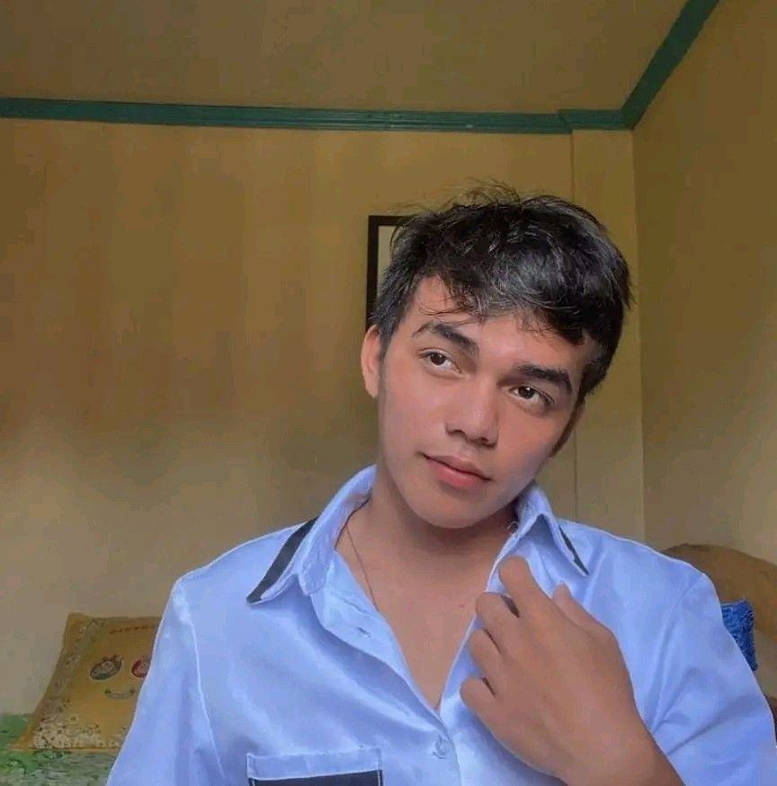
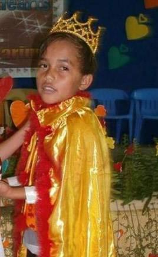
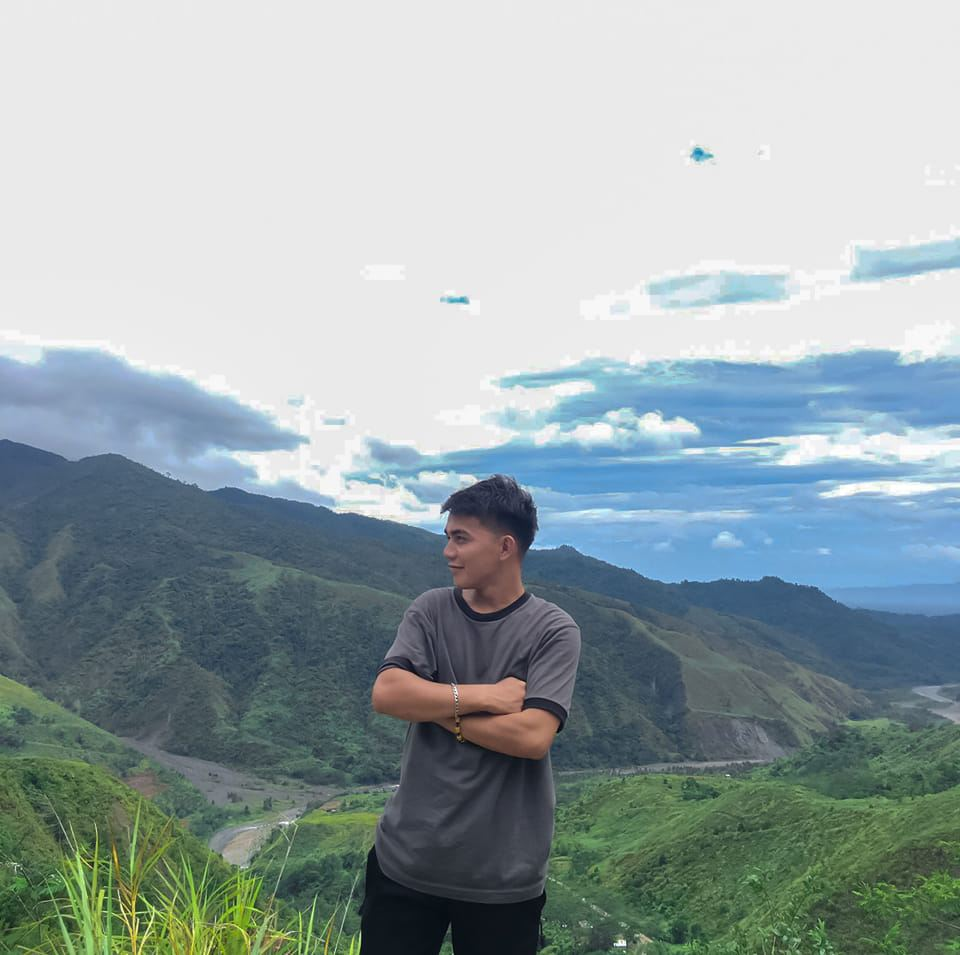
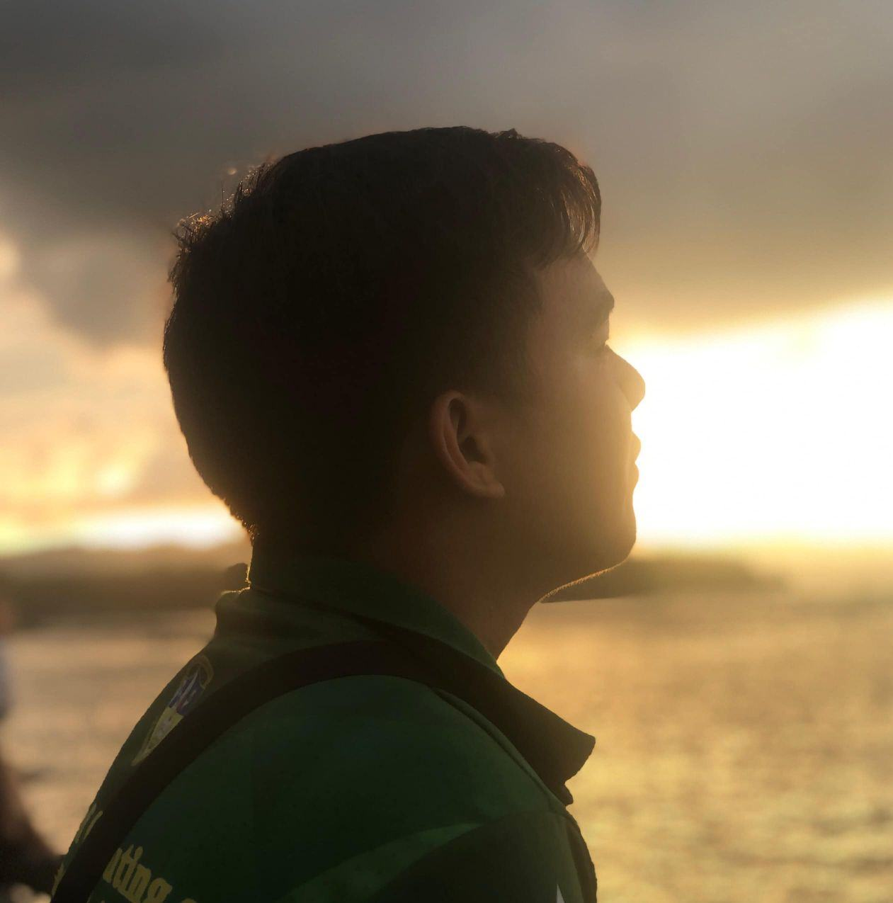
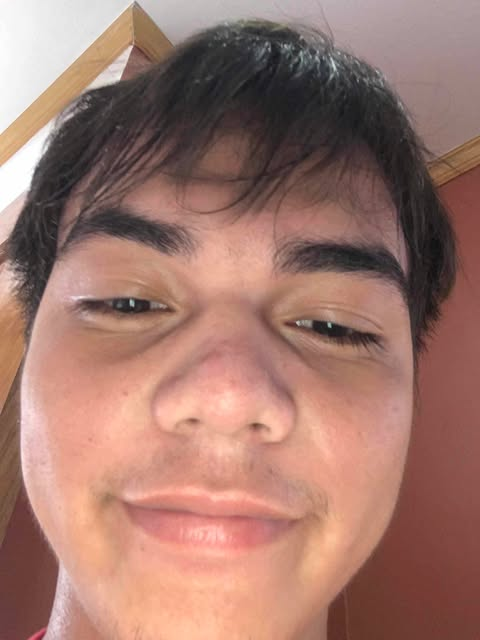
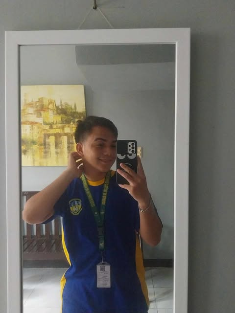
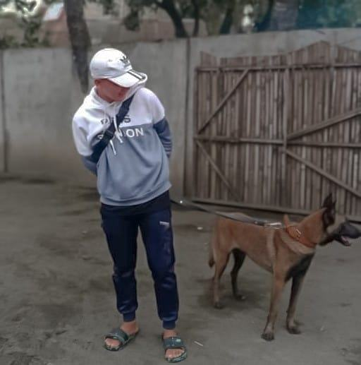

Joryn M. Cagulangan is a 20-year-old second-year student currently pursuing a Bachelor
of Science in Information Technology (BSIT). Residing at Maalat Boarding House, Joryn
demonstrates a strong sense of independence while focusing on academic and personal growth.
Originally from P-14, Brgy. Manila de Bugabus Butuan City, Joryn is committed to building a future in the
ever-evolving field of technology. This stage of life reflects not only dedication to education
but also the resilience and adaptability needed to thrive in a dynamic environment.

Joryn M. Cagulangan
My Lifestory
I grew up in a small, humble home in P-14, Brgy. Manila de Bugabus. As a child, I was known for my
boundless energy, running around the neighborhood from sunrise to sunset. But with all that energy
came tears. I cried at every little bump or scrape, my wails echoing through the barangay.
Life was tough, with barely enough to go around, but I creativity thrived. I turned scraps into
toys and simple moments into adventures. Though I didn’t have much, my hyper spirit and resilience
kept me going, dreaming of a brighter future.

Childhood experience
As I grew into my teenage years, my hyper energy turned into a love for traveling. I found joy in exploring
nearby barangays, hiking hills, and biking down dusty roads. Every trip, no matter how small, felt like an
adventure. Traveling gave me a sense of freedom and inspired dreams of one day exploring far-off places,
proving that even humble beginnings couldn’t limit a heart full of wanderlust.

Teenage experience
As a college student pursuing IT, my life became a mix of challenges and growth. Living in a boarding house,
I'm focused on my studies, determined to build a brighter future. Despite the demands of school, my love for
exploration remained. On weekends, I would visit nearby places, finding inspiration and joy in every little
adventure. I was turning my dreams into reality, one step at a time.

Adulthood experience
Hobbies
I always enjoyed taking selfies. It wasn’t just about capturing my face it was a way for me
to freeze moments in time, to remember the small joys of everyday life. Whether it was a
quick snap during study breaks or a fun shot with friends, selfies became my way of expressing
yself. Each picture told a story of my day, mood, and my journey, reminding me to appreciate
the little things along the way.

Indoor Hobbies
I also loved taking mirror shots, finding them the perfect way to capture both my outfit and my vibe.
Standing in front of my mirror, I’d strike a pose, adjusting my angle just right to get the perfect shot.
It wasn’t just about the picture, it was about expressing myself and feeling confident in my skin.
Every mirror selfie was a moment of self-expression, a reflection of my unique style and personality,
and a fun way to capture my journey, one frame at a time.

Indoor Hobbies
I cherished the moments spent playing with my dog. Whether it was a game of fetch in the yard or just
running around together, those moments filled me with joy. My dog was my loyal companion, always ready
to join in the fun. The fresh air, the sound of laughter, and the wagging tail made every outdoor play
session special, reminding me of the simple pleasures in life and the bond he shared with his furry friend.

Outdoor Hobbies
Favorites
For me, my greatest hero wasn’t a fictional character, but my mother. She was the one who had
always been there, through thick and thin. Her strength, kindness, and unwavering support inspired
me every day. No matter the challenges we faced, my mother always found a way to make things work,
showing me the true meaning of resilience and love. I looked up to her not just for what she did,
but for the heart and spirit she carried. To me, she was the greatest hero of all.
My Mother, My Hero.
My favorite food was shrimp. Whether it was grilled, sautéed, or cooked in a savory dish, shrimp always
hit the spot. The sweet, tender meat combined with just the right seasoning made every bite a treat.
I loved enjoying it with a side of rice, savoring the flavors with every mouthful. Shrimp wasn’t just
a meal it was a comfort, a little taste of happiness that I looked forward to after a long day.
Shirmp
Friends
My favorite childhood friend, Shielo, had been with me through thick and thin. From playful days as kids to
supporting each other in college, their friendship only grew stronger. No matter where life took them,
we knew their bond would last forever.